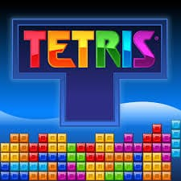
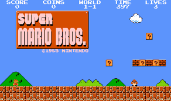
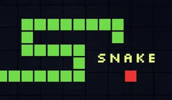

Proyectos
Tetris
¿Qué tal un puzle que nunca pasa de moda? Así nació Tetris, un juego que desafía tu lógica y rapidez mental. Las piezas geométricas, llamadas tetrominós, caen desde lo alto de la pantalla, y tu tarea es encajarlas perfectamente para formar líneas horizontales completas. Cada línea que desaparece te acerca a un puntaje más alto, y la velocidad aumenta a medida que avanzas. ¡Es el equilibrio perfecto entre simplicidad y desafío!

MarioBros
Imagina un mundo lleno de colores vibrantes y aventuras sin fin. Te presento a Mario, el fontanero con bigote más famoso del universo. En este juego, creé un héroe que salta, corre y aplasta enemigos mientras intenta rescatar a la Princesa Peach del malvado Bowser. Todo comenzó con un viaje por distintos mundos temáticos, desde verdes praderas hasta castillos llenos de lava, cada uno más desafiante que el anterior.

Snake
Recuerda aquellos días nostálgicos en los que los teléfonos móviles apenas empezaban a ser parte de nuestra vida diaria. Inventé Snake, un juego simple pero adictivo, donde controlas a una serpiente hambrienta que crece cada vez que come. A medida que la serpiente se alarga, el desafío aumenta, y evitar chocar contra las paredes o contra sí misma se convierte en una prueba de habilidad y paciencia.

Acortador de Urls
En un mundo donde cada segundo cuenta, creé el acortador de URL, una herramienta para simplificar la vida digital. Convierte esas largas y complicadas direcciones web en enlaces cortos y fáciles de compartir. Ideal para redes sociales o cualquier lugar donde el espacio sea limitado, como Twitter. Solo pega la URL larga, haz clic en un botón y obtén un enlace corto y elegante al instante.